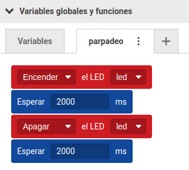
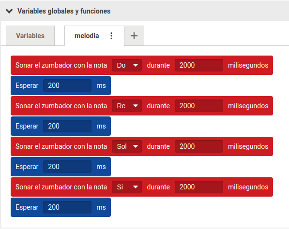
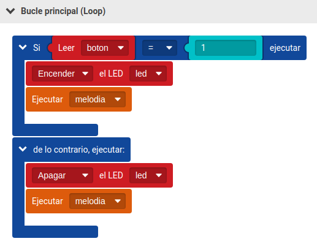
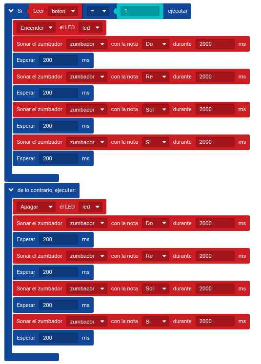
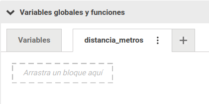
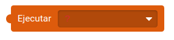
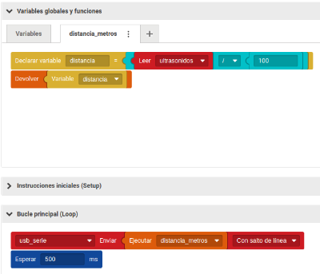

Una función es un fragmento de programa diseñado para ser reutilizado en múltiples ocasiones. Es uno de los elementos más importantes de la programación, puesto que permite agrupar una serie de tareas en una sola instrucción. De esta forma podemos reutilizar un programa que ya hayamos escrito y nuestro código será menos repetitivo. Normalmente una función realiza una o varias tareas pudiendo, al terminar, devolver un valor (numérico, textual, lógico o de otro tipo) que será utilizado por el programa principal (funciones con retorno) o no devolver nada (funciones sin retorno).
Funciones sin retorno
Por ejemplo, una tarea que hemos realizado varias veces en otros ejercicios es hacer parpadear un LED, lo cual implica una serie de pasos (encender, esperar, apagar...).
Podría resultarnos útil y cómodo no tener que escribir todos los pasos cada vez, sino tener una función parpadeo que lo automatice.
Lo primero que tenemos que hacer es definir qué hace nuestra función, es decir, qué tarea o conjunto de tareas realiza. Esto siempre lo tenemos que escribir en el apartado Variables globales y funciones de nuestro programa. Para ello utilizamos la pestaña función1, donde debemos cambiarle el nombre haciendo clic en los tres puntos y con ello quedará declarada. Al igual que con las variables, debemos nombrarlas siguiendo las mismas reglas. Después, siempre que queramos utilizarla, tendremos que ejecutarla en el Bucle principal (Loop) con el bloque Ejecutar de la categoría Funciones:
Figura 47. Declaración y ejecución de una función.
Imaginemos ahora que queremos tocar una pequeña melodía varias veces en distintos momentos del programa y encender un LED presionando un botón.
Normalmente deberíamos repetir todos los bloques de la melodía cada vez que queramos usarla. Al final tendríamos un programa largo y difícil de entender y
modificar. ¿Por qué no reutilizar siempre los mismos bloques? Vamos a crear una función que contenga la melodía para más tarde utilizarla siempre que la
necesitemos. Para ello usaremos el zumbador, un botón y un LED.
De nuevo, para poder utilizar una función, primero hay que crearla dentro de la zona Variables globales y funciones.
Figura 48. Ejemplo de declaración de una función.
Una vez creada, es necesario ejecutarla dentro del Bucle principal (Loop). Las funciones no se ejecutan a no ser que las llamemos mediante el bloque Ejecutar.
Figura 49. Ejemplo de ejecución de una función dentro de una estructura de programación.
Si no utilizásemos la función el programa quedaría de la siguiente manera:
Figura 50. Comparativa de programación sin el uso de funciones.
Como podemos ver, el programa es mucho más corto usando funciones, siendo mucho más rápido y fácil de crear. Además, si por alguna razón queremos modificar
la melodía, solo tendremos que cambiarla en la función y no en cada parte del programa.
Funciones con retorno
Vamos a ver un ejemplo con el siguiente reto: necesitamos realizar un medidor de distancia que nos devuelva el valor de la misma en metros.
Utilizaremos para este reto el componente ultrasonidos que nos va a medir la distancia aproximada en centímetros. Por tanto, podemos realizar una función con
retorno que devuelva el valor de haber realizado la operación de conversión de la magnitud:
distancia (cm) / 100 (cm/m) = distancia (m)
Después, mostraremos este valor por el Monitor Puerto Serie. Declaramos la función en el apartado de Variables globales y funciones.
Figura 51. Declarar una función.
Damos un nombre a la función (en nuestro caso distancia_metros) y en su interior, declaramos la variable que va a contener la operación matemática, nosotros la
hemos llamado distancia y la igualamos a dicha operación.
En el Bucle principal (Loop), utilizamos el bloque Enviar de la categoría de Componentes, para mandar por monitor puerto serie el valor que devuelve la
función tras haberla ejecutado, por lo que utilizaremos para rellenarlo el bloque Ejecutar.
Figura 52. Bloque ejecutar función con retorno.
Y añadimos también una pequeña espera de 0,5 segundos para poder ver mejor los valores en el Monitor Puerto Serie.
El programa quedaría de la siguiente manera:
Figura 53. Ejemplo de programación de funciones con retorno.
IMPORTANTE. Si declaramos una variable, dentro de una función, esa variable será local y solo podrá ser utilizada dentro de dicha función.